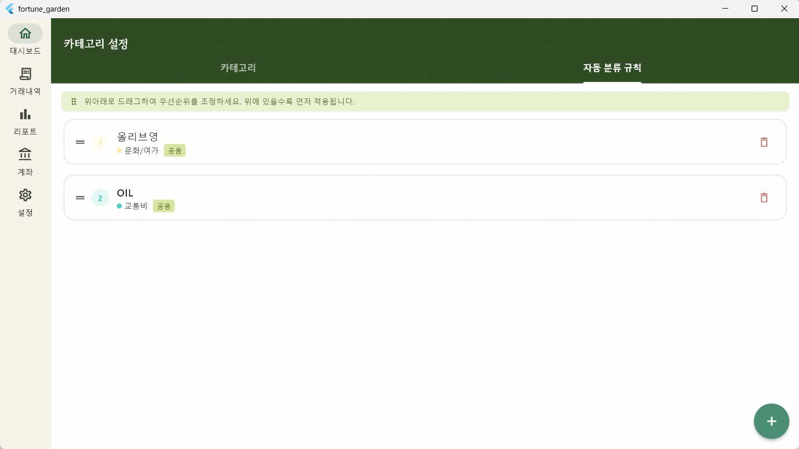

UX Improvement
01. 규칙 우선순위 UI 개선

자동 분류 규칙의 우선순위를 숫자로 직접 입력하던 기존 방식을 직관적인 드래그 앤 드롭(Drag & Drop) 정렬 방식으로 전면 교체했습니다.
주요 변경 사항
-
ReorderableListView 도입:
categories_screen.dart에 적용하여 드래그 중 즉각적인 UI 반응 처리. -
Repository 로직 확장:
reorderRules()메서드를 추가하여 변경된 순서에 따라 DB Priority 값을 트랜잭션으로 일괄 업데이트. -
UI 컴포넌트 최적화: 드래그 핸들 아이콘 추가 및
순위 배지 표시, 중복 제스처 방지를 위해
Dismissible제거.
// ReorderableListView 드래그 핸들러 예시 onReorder: (oldIndex, newIndex) { setState(() { if (oldIndex < newIndex) newIndex -= 1; final item = _localRules.removeAt(oldIndex); _localRules.insert(newIndex, item); }); _savePriorityToDb(); }
Architecture
02. 라우트 경로 하드코딩 → 경로 상수 일괄 교체
여러 화면에 분산되어 있던 경로 문자열을 중앙 관리 방식으로 변경하여 오타 위험을 방지하고 유지보수성을 높였습니다.
AppRoutes 클래스 정의
lib/presentation/router/app_routes.dart를 신규 생성하여
모든 절대 경로와 하위 세그먼트를 관리합니다.
| 대상 파일 | 교체 수 | 비고 |
|---|---|---|
app_router.dart |
11곳 | 핵심 라우팅 로직 연동 |
dashboard_screen.dart |
5곳 | 메인 대시보드 내 이동 |
transactions_screen.dart |
6곳 | 거래 내역 진입 및 상세 |
| 기타 화면 | 8곳 | 설정, 계좌, 초기설정 등 |
Security
03. 계좌번호 암호화 저장 구현
그동안 DEV placeholder로 관리되던 계좌번호를 실제 AES-256-CBC 알고리즘을 사용하여 암호화 저장하도록 구현했습니다.
보안 메커니즘
-
키 관리: 256비트 랜덤 키를 자동 생성하여
flutter_secure_storage에 안전하게 보관. -
저장 형식:
[IV(16B) | 암호문(nB)]형태의 Uint8List로 DB BlobColumn에 저장. - 사용자 인터페이스: 계좌 등록 폼에 입력 필드 및 마스킹 토글(visibility) 버튼 추가.
// AccountEncryptionService 암호화 로직 final encrypter = Encrypter(AES(key, mode: AESMode.cbc)); final encrypted = encrypter.encrypt(plainText, iv: iv); return Uint8List.fromList(iv.bytes + encrypted.bytes);
Final Status
04. 미해결 항목 최종 현황
오늘 작업을 통해 주요 중간/낮음 우선순위 항목들이 대부분 해소되었습니다.
| 우선순위 | 항목 | 상태 |
|---|---|---|
| 중간 | 규칙 우선순위 UI 개선 | ✅ 완료 |
| 낮음 | 계좌번호 암호화 실구현 | ✅ 완료 |
| 낮음 | 라우트 경로 하드코딩 제거 | ✅ 완료 |
Comments